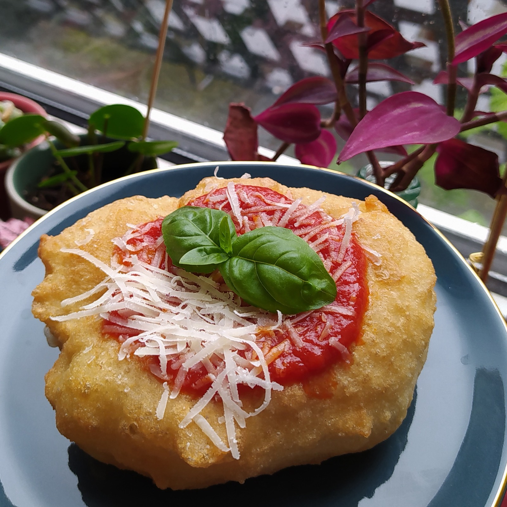

Aperitivo
Small plates and drinks, standing or sitting, built around one theme — the street food of Naples, say, or a summer on the coast. Short stories with every bite, and the fried things straight from the pan. Raffa — confirm minimum
Book an aperitivo →